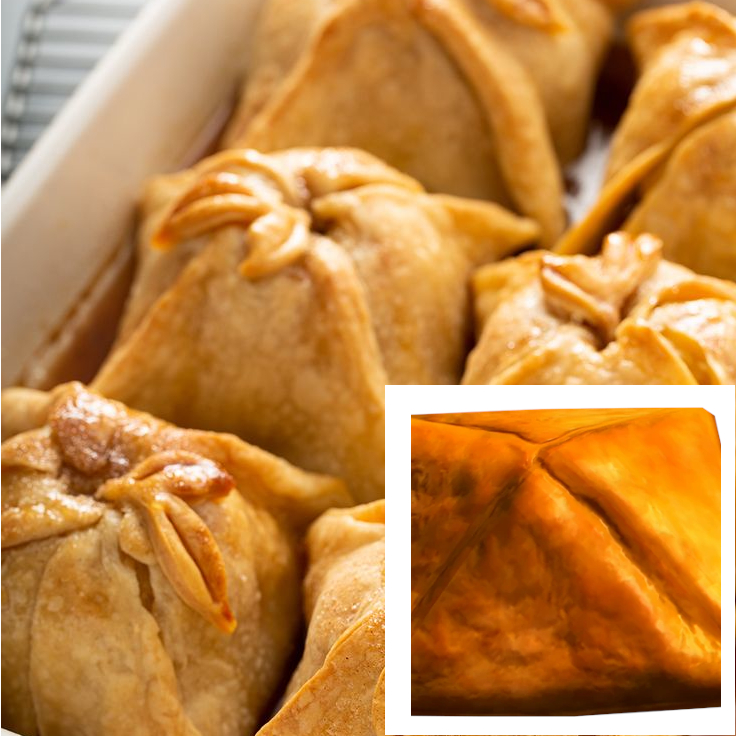

Apple Dumpling

A simple yet delicious snack found throughout Skyrim. These sweets are
like bite-sized Apple Pies
often enjoyed in homes. While they are hardly enough for an end-of-meal
dessert Apple Dumplings
serve as an excellent treat.
Ingredients:
- 1 packet puff pastry sheets
- 6 large apples (peeled & diced)
- 1 tsp ground cinnamon
- 1 tsp ground nutmeg
- 1/2 cup brown sugar
- 1 tsp vanilla essence
- 1/2 cup butter (melted)
- 1 egg (for brushing)
Steps:
-
Preheat your oven to 200C/392F. Roll out your pastry and cut into 5"
squares. Grease a baking
tray well and set aside.
-
In a mixing bowl, combine your diced apples, spices, sugar, vanilla
essence, and half the butter.
Mix well, and fill your pastries with a spoon. Fold the pastries into
the centre at all four corners and
pinch together in the centre with wet fingers to keep the pastry
together.
-
Separate the dumplings on the baking tray so they do not stick together.
Brush your dumplings with
the remaining butter and egg glaze, and
bake for 30-45 minutes, or until well browned.
Remove from the oven to cool. Serve plain or drizzle with maple syrup.
Go and support Tastes of Tamriel! (Source)
Return to main page